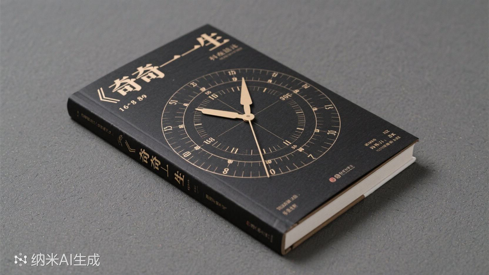
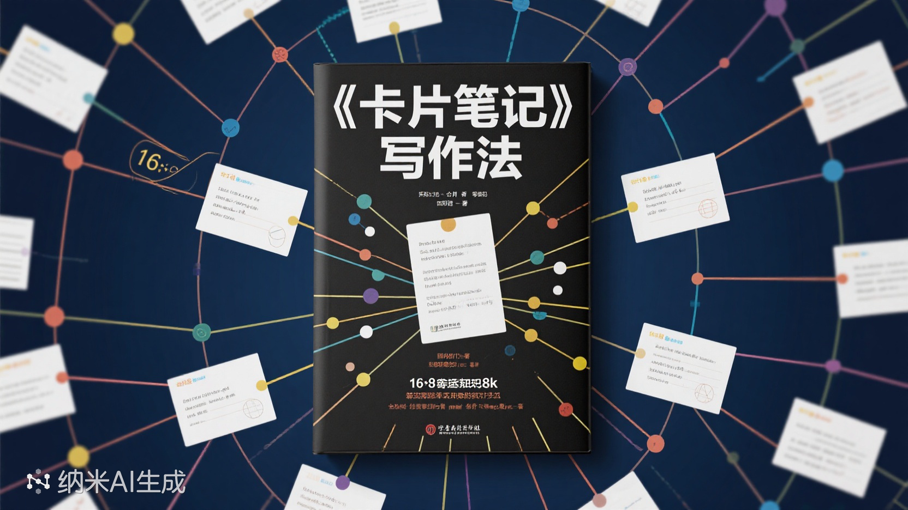
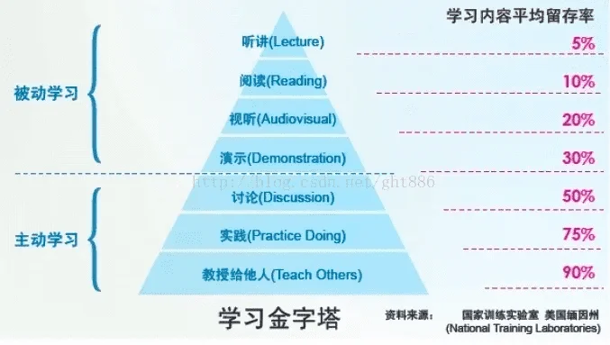
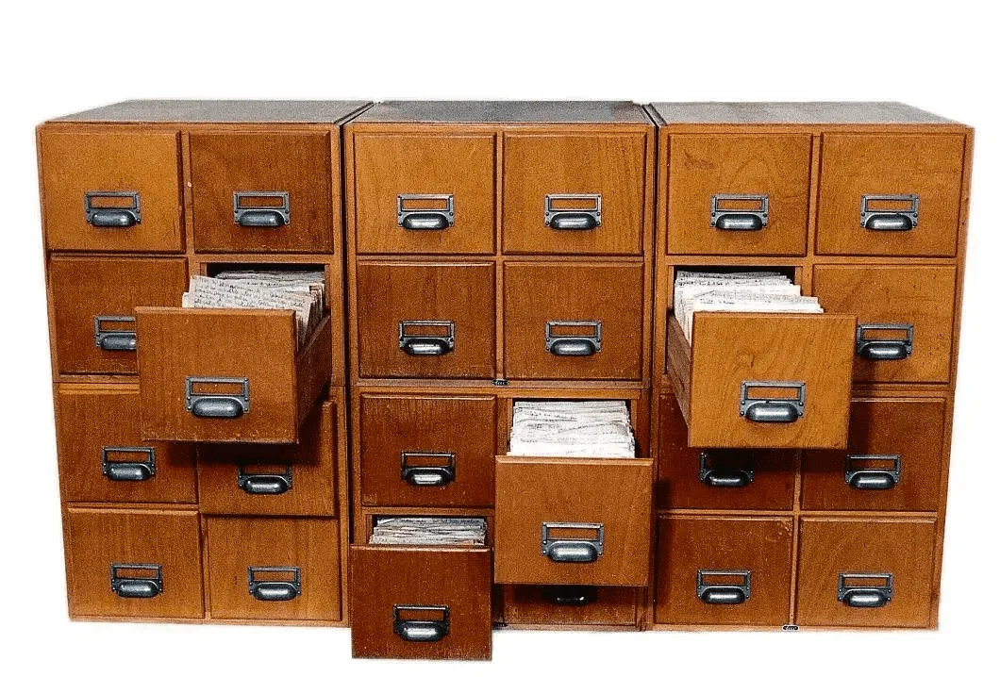
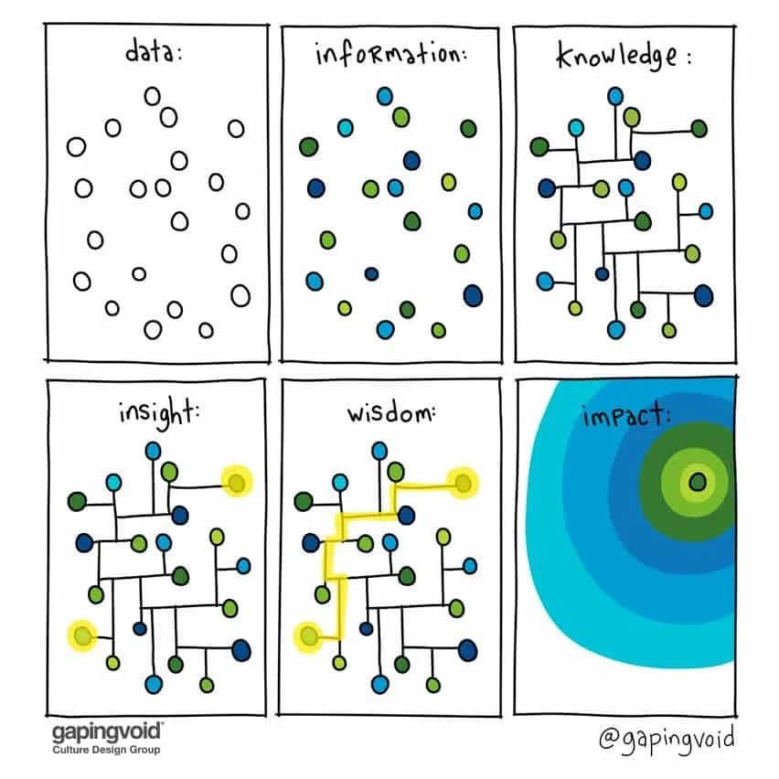
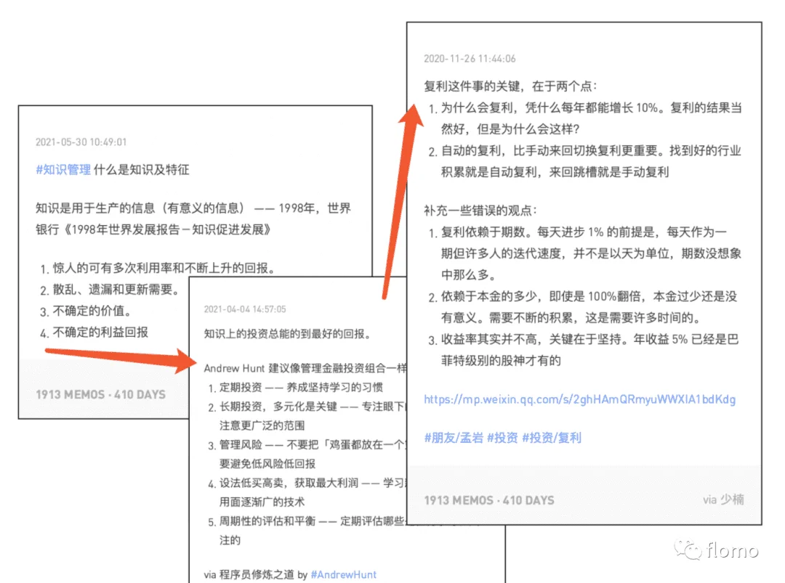
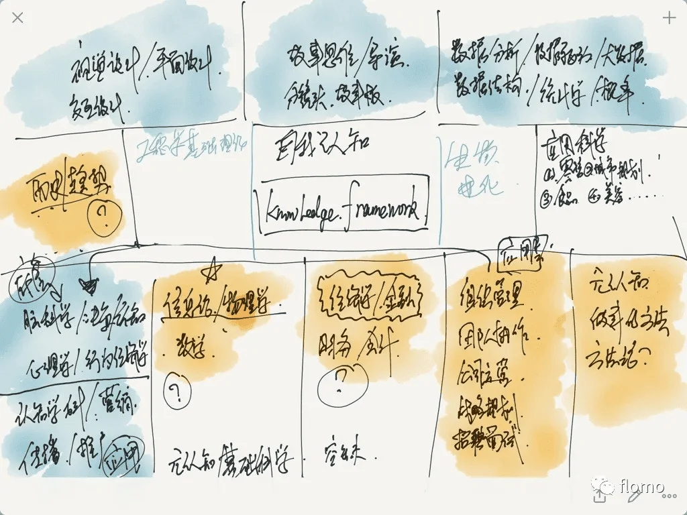

《奇特的一生》 ⭐️⭐️⭐️
《卡片笔记写作法》 ⭐️⭐️⭐️⭐️
此时
此书

苏联作家格拉宁为生物学家柳比歇夫（Alexander Lyubishchev）1916 - 1972 创作的传记，核心在于介绍他独创的"时间统计法"——通过56年如一日记录时间开销
将时间支出分为两类：
每晚统计时间消耗，月末汇总分析，年底撰写年度报告（如1963年他统计出全年有效工作达1906小时，平均每天5.1小时）。
他一生积累了超过5万小时的纯学术时间（相当于每天3小时持续50年）。84岁临终前仍在工作
1943年7月14日
理论工作：物种形成的数学模型 —— 1h45m（效率评分：A-，后45分钟被敲门打断）
校对《蚜虫分类手稿》 —— 58m（错误率：2处/千字）
与生态学家И.А.基里洛夫讨论物种竞争模型 —— 1h15m
产出：修正论文公式（3处错误避免）
效率评分：A（明确议题，无闲聊）
参加研究所周年聚餐 —— 2h40m
有效交流：12m（与年轻学者讨论蚜虫标本采集）
其余时间：被迫听领导讲话（38m）、重复性寒暄（50m）
1970年8月7日
晨泳（1.5公里） —— 28m（心率140，恢复良好）
午休（严格20分钟） —— 20m（无超时）
1965年4月9日
计划任务：《科学史》第三章撰写
实际执行：1h10m（被同事打断2次，共损失25m）
复盘：下次写作期间关闭办公室门
调整方案：
1965年圣诞节
妹妹全家来访 —— 5h30m
有效时段：1h（甥女请教数学问题）
无效时段：4.5h（家长里短，电视噪音）
批注：
1937年：
柳比歇夫（时年约41岁）已在昆虫分类学领域取得显著成就，研究所高层提议由他接任行政职务。
他的计算：
通过时间统计法预估，担任所长后：
结论：行政工作与个人研究目标冲突，果断拒绝。
二战时在防空洞仍坚持每日3小时科研（用时间记录对抗战争混乱）。
学术产出：
阅读量：
时间复利：
| 领域 | 具体贡献 |
|---|---|
| 数学 | 研究生物统计学中的概率问题，提出"形态测量学"新方法（如用几何学分析昆虫形态演化） |
| 科学史 | 撰写《科学史中的方法论问题》，探讨伽利略、牛顿等科学家的思维模式 |
| 哲学 | 对"时间本质"的哲学思考（直接启发其时间统计法） |
| 语言学 | 精通多国语言，翻译英、德、法学术文献，甚至研究古斯拉夫语语法 |
| 文学批评 | 出版《陀思妥耶夫斯基的三重辩证法》等文学分析著作 |
终身学习者的圣经
"五等分时间分配法"（科研/阅读/社交/生活/兴趣均衡）成为FIRE（财务自由早期退休）运动者的时间模板
案例：一位MIT教授模仿其方法，用10年业余时间自学成建筑史专家并出版专著
柳比歇夫证明了两个重要观点：
对时间更敏感一些
德国社会学家尼克拉斯·卢曼如何通过"卡片盒笔记法"（Zettelkasten），在没有学位背景的情况下，成为20世纪最具影响力的社会学家之一。他的方法核心在于：记录灵感、建立连接、形成网络、涌现新知。该书不仅是一本笔记方法指南，更是一套完整的知识管理体系。
凭借卡片笔记写作法（Zettelkasten）高效输出了大量跨学科著作，并在社会学、系统理论等领域提出了开创性观点。以下是他的主要学术成果和贡献：




举个例子：自我认知，数据分析，科技（LLM，自动驾驶），宠物学，零售 ....
连接带来更多学习知识的快乐
❌ 误区一：机械堆积摘抄
❌ 误区二：过度分类整理
❌ 误区三：盲目追求数量
卢曼认为：社会系统的最小单位不是人，而是"沟通"（Communication）。
"沟通"的严格定义：一个包括"信息（Information）→表达（Utterance）→理解（Understanding）"三重选择的闭环过程。
举例：当你读到这句话时，社会系统存在的不是"你"和"我"，而是"这段文字传递的信息是否被理解"这一沟通事件
数字仓鼠
https://m.gmw.cn/2024-05/15/content_1303737454.htm
核心需要「记录自己的声音」，因为自己的想法是别人无法告诉你的。只有能打动自己的东西，才能成为知识生产的核心。
换种收藏方式：